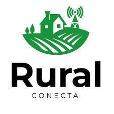

Conteúdo offline
Aulas e materiais que funcionam sem conexão e sincronizam quando houver rede.
Inclusão digital para comunidades rurais — educação, saúde e orientações agrícolas, mesmo sem conexão contínua.
Capacitar comunidades rurais com ferramentas digitais leves e inclusivas, promovendo educação, informação e sustentabilidade.
Aulas e materiais que funcionam sem conexão e sincronizam quando houver rede.
Avisos locais, oportunidades e troca de informações entre vizinhanças.
Orientações práticas e calendários sazonais para pequenos produtores.